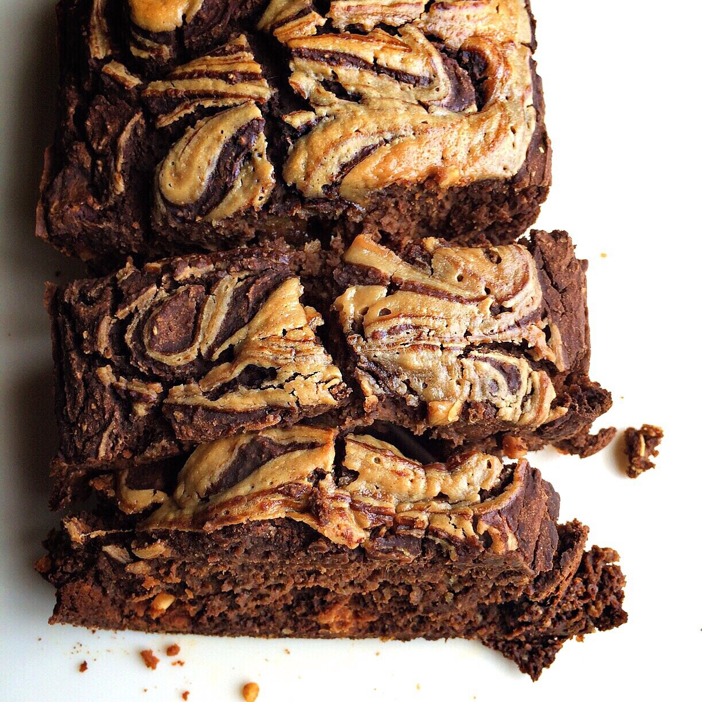
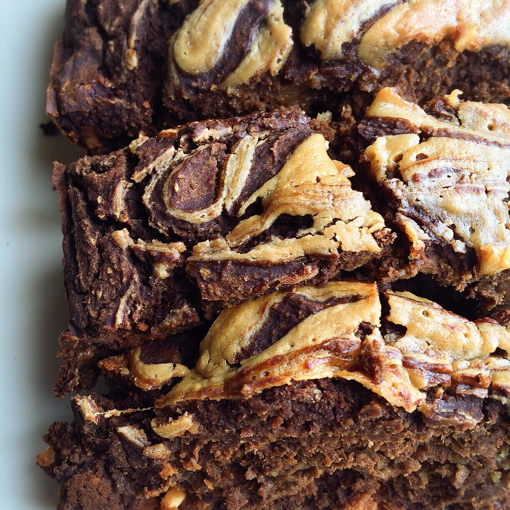

Chocolate Cake + Peanut Butter Caramel Swirl (vegan, gluten free)


This Vegan Chocolate Cake is mesmerizing. Stare into my caramel swirlllll. Oooh. Ahhh.
Not just that, but it's a PEANUT BUTTER caramel swirl and the cake has hidden chocolate peanut butter chunks too. So decadent! Just loooooook. But it's vegan, gluten free, protein boosted, and absolutely delicious.
If you caught my last post, you saw that I started working at the CDC again this week! I worked there for two years after college, left for 9 months for various reasons (bad health + pursuing other goals), but I'm back! It's crazy because I didn't think I'd miss it? But I do? Just weird, man.
This week's been not too stressful (woo!), just getting used to the schedule and how my 'routine' will be from here on. Today, though, I got hit with a really bad headache and maybe a fever? My head is hotttt and I feel wiped out. And my right lymph node is swollen & tender, but not my left. Is that even possible? I don't know. Point is. I'm very ready for the weekend. Love work, but I will definitely appreciate the weekends so much more again. The thing with running my own business & career the last 9 months was there was NEVER a weekend. I always had to be thinking, planning, working, 7 days of the week. So it's nice to be on a Monday-Friday schedule again, even if that means having a commute and very long days.
Anyways, try this vegan chocolate cake out! Makes the week a little easier (and yummier!).
Vegan Chocolate Cake + Peanut Butter Caramel Swirl
Makes: 10 slices
Cake Batter
-
1 cup raw oats
-
1/2 cup buckwheat flour (or more oats)
-
2 scoops vanilla Nuzest plant-based protein (25 g, Optional)
-
1/2 cup unsweetened cocoa powder
-
3/4 cup baking stevia
-
1 TBSP baking powder
-
1 cup canned pumpkin puree
-
1.25 cups unsweetened almond milk
-
1 Chocolate Coated Peanut Butter Squarebar
Caramel Swirl
-
1 TBSP peanut butter
-
2 TBSP brown rice syrup
-
First, grind the oats into a flour. Ensure the oats are certified gluten free if you cannot have gluten. Add the remaining dry ingredients to the bowl and mix evenly.
-
Add the wet ingredients (pumpkin puree, almond milk) and stir until the batter forms. If too thick, add up to 1/4 cup more almond milk.
-
Chop the Squarebar into small pieces (I did about 32 pieces) and fold them into the batter.
-
Spray a bread loaf pan with nonstick spray and pour in your cake batter.
-
Prepare the caramel by mixing the peanut butter and brown rice syrup. Drizzle the caramel on top of the cake batter, giving it a nice swirl with a knife or toothpick. Bake at 350 F for 50-60 minutes, or until a toothpick comes out of the cake clean (no batter).
-
Let cool for 10-15 minutes, cut into 10 slices, and enjoy!
Nutrition info for 1 slice: 130 calories; 3.5 g fat, 18.7 g carbs (3 g fiber, 4 g sugar), 6.4 g protein